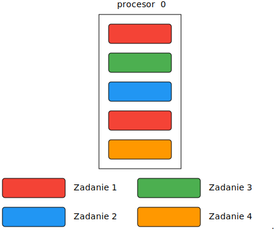
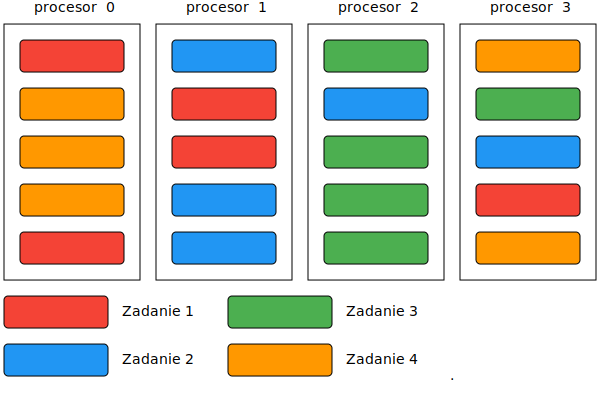

Wielozadaniowość
Co to jest wielozadaniowość
Wielozadaniowość oznacza, że system operacyjny może wykonywać wiele zadań jednocześnie. W przypadku maszyn jednoprocesorowych, system sprawia wrażenie wykonującego wiele zadań jednocześnie, a w rzeczywistości przydziela czas procesora na przemian kilku procesom.

Wielozadaniowość na wielu procesorach/rdzeniach
W przypadku wielu procesorów, system operacyjny może uruchamiać procesy rzeczywiście równolegle

Wielozadaniowość na wielu procesorach/rdzeniach
W praktyce procesy mogą być uruchamiane na różnych rdzeniach procesora.

Afiniczność procesora
W Linuksie możemy określić na których procesorach będzie wykonywany proces
$ taskset -p 0x11 9726Podobne ustawienie istnieje również w menedżerze zadań systemu Windows